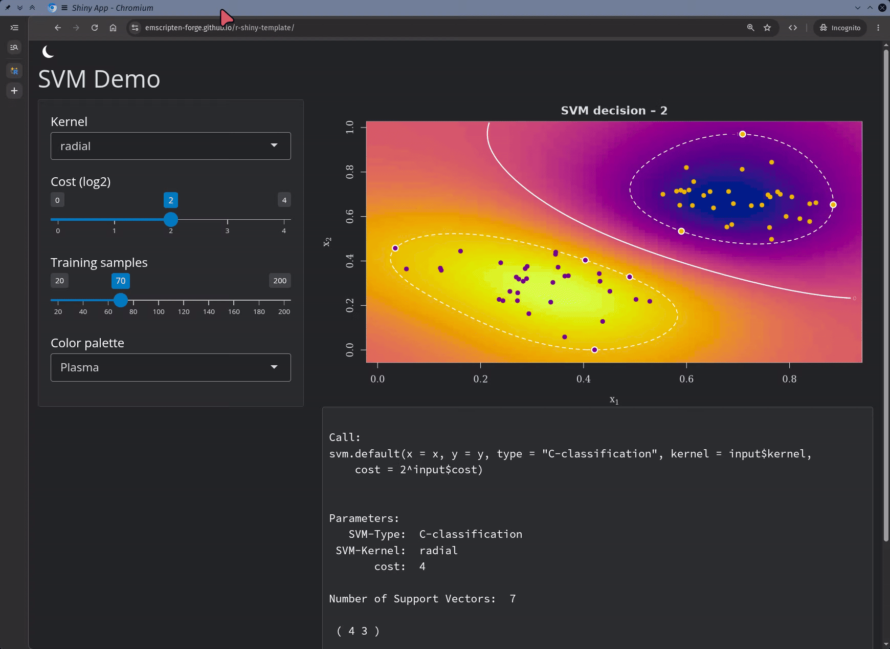

Static Shiny Dashboards in the Browser with Emscripten-Forge#

We are excited to announce the integration of Shiny with emscripten-forge, enabling fully-static Shiny dashboards that run entirely in the browser! They can also be published to GitHub pages with a single template repository.
The Cost of Traditional Shiny Deployment#
In a traditional Shiny deployment, the application runs on a server and is typically backed by an R process. Computing resources must therefore be provisioned in proportion to the number of user sessions: every concurrent visitor requires memory and CPU on the infrastructure. When many people connect at once, such as during a course, a product launch, or a conference demo, expensive cloud resources may need to be provisioned, or degraded performance and timeouts may result.
Beyond raw cost, operating a Shiny server also comes with the usual operational burdens: keeping the server up to date, monitoring, scaling policies, and access control.
WebAssembly Changes Everything#
WebAssembly changes the economics of Shiny deployment entirely. With R compiled to WebAssembly, the application logic runs in the browser of each visitor: compute resources are provided by the user, and the infrastructure cost goes from O(n) to O(1). Serving the dashboard is no different from serving any static website, a flat cost, regardless of how many people connect.
For most basic Shiny applications, the resources available to a modern browser are more than enough. This model is a perfect fit for:
Education: interactive course materials and exercises that every student can run independently, at no cost to the institution.
Documentation: interactive docs and examples that are always live, with no backend to maintain.
Sharing quantitative results at scale: interactive reports and results that can be shared with thousands of readers without provisioning a single server.
Why Emscripten-Forge?#
Emscripten-forge is a conda/mamba-based software distribution for the Web browser. Unlike language-specific ecosystems such as Pyodide (Python) and WebR (R), emscripten-forge is language-agnostic: Python, R, GNU Octave packages, console applications, and native libraries are all peers that can share common binary dependencies.
This matters beyond convenience. With R and Python packages living in the same dependency graph, a static R-Shiny dashboard built with emscripten-forge can invoke Python code directly. For instance, a Shiny UI can be backed by a Python ML model or a Python data-processing library, all in a single static page. Language-specific runtimes cannot offer this out of the box.
How Does it Work?#
Lucent, our client-side Shiny runtime, boots a full R-Shiny stack inside the browser. When a Lucent site is opened, a bundled WebAssembly environment (R runtime and all required dependencies) is loaded onto a virtual filesystem. The Shiny app is initialized from within that local R session, without the need for a remote R server or any installation required by the visitor.
As far as Shiny is concerned, the setup still acts as an ordinary web server, but this server is virtual. A service worker intercepts HTTP traffic from the app and forwards it to R running in a background worker; Shiny’s WebSocket traffic goes through a virtual socket that uses fetch for open/send/close messages and a MessagePort for server-to-client pushes. The app UI is displayed in an embedded iframe and matches the experience of a regular Shiny dashboard while keeping all R computations entirely on the user’s machine.
The diagram below shows how Lucent connects the host page, the Shiny UI iframe, and the R WebAssembly worker:
To simplify deployments, we developed lucent-pack, a tool which turns a Shiny app and its R environment into a fully static site. Lucent-pack requires two inputs: the path to the Shiny app directory and the path to the WebAssembly environment containing all of the app dependencies. Then, it uses empack to archive the environment and the app into tarballs. Lastly, it outputs a publishable static tree which includes the lucent runtime. This static site will automatically boot R, run the Shiny app, and connect the app UI to the browser’s R session.
Deploying Shiny Dashboards to GitHub Pages#
To make this easy to try, we provide a GitHub template repository that builds and publishes a static Shiny dashboard to GitHub pages in a few clicks:
👉 github.com/emscripten-forge/r-shiny-template
The requirements to run the app are specified in the environment.yaml file. The template automatically creates a WebAssembly environment based on the environment file, and it uses lucent-pack to generate the static bundle and publish to GitHub pages.

SVM Demo Shiny app running on GitHub Pages#
Shiny dashboards also support calling Python functions from R by using reticulate. See our previous blog post Mixed R and Python workflows in the browser with Emscripten-Forge to learn more.
Acknowledgements#
This work by Isabel Paredes at QuantStack was funded by Safran Tech.